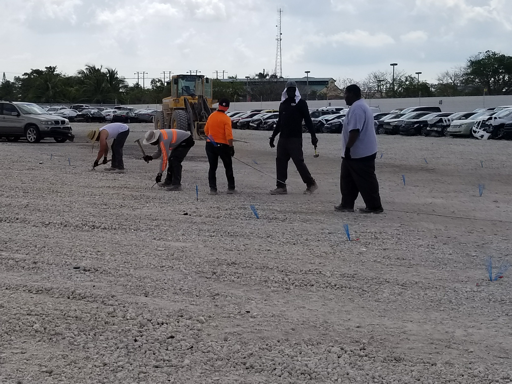
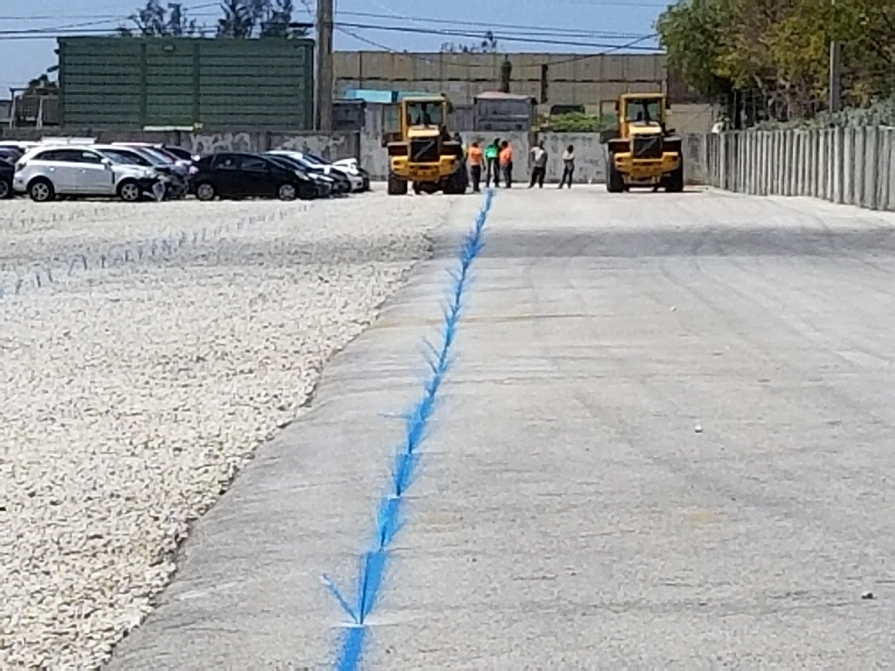

90° Project - Copart
Yard reconfiguration initiative that increased usable capacity by shifting vehicle orientation from 45 degrees to 90 degrees, enabling more efficient space utilization and improved operational flow.
Field visuals and planning references from the 90-degree yard redesign project.




Want efficiency gains like this?
Share your operational goals and I will review your project scope.
Go to Contact Form